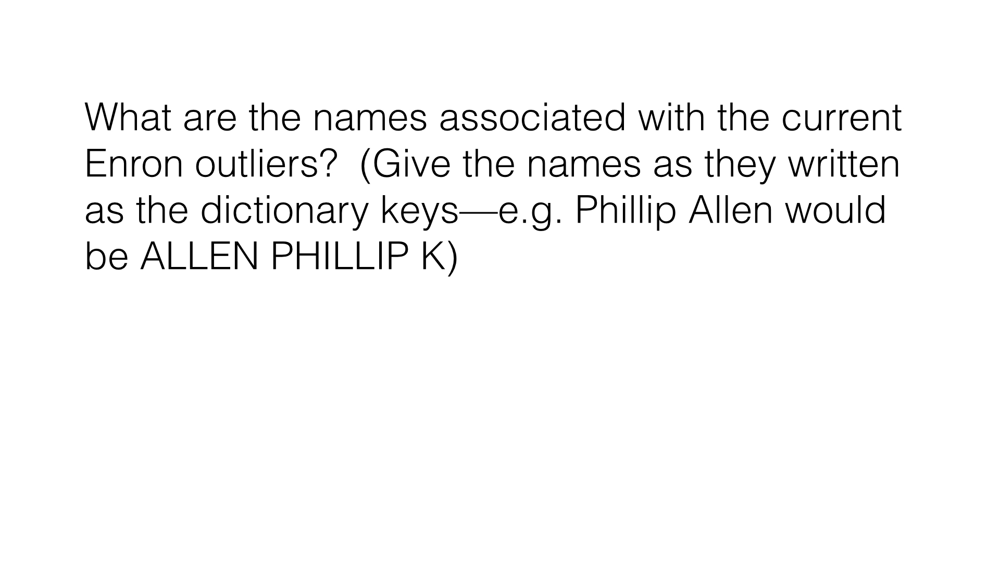

18. 再识别两个异常值
再识别两个异常值
Question:
我们认为还有 4 个异常值需要调查；让我们举例来看。两人获得了至少 5 百万美元的奖金，以及超过 1 百万美元的工资；换句话说，他们就像是强盗。
和这些点相关的名字是什么？
Start Quiz:

INSTRUCTOR NOTE:
与当前 Enron 异常值相关联的名称有哪些？（给出字典 key 值中所写的名称 – 如：Phillip Allen 将是 ALLEN PHILLIP K）